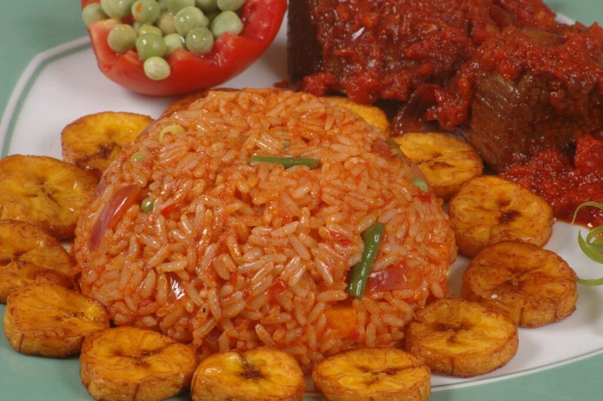

West Africa
Jollof Rice
Jollof rice traces back to the Wolof people of the old Jolof Empire in present-day Senegal and The Gambia, where rice was cooked in a fish and vegetable sauce. From there it spread across West Africa, and every country made it its own.
Today it is the dish at weddings, birthdays and Sunday lunches. Nigerians and Ghanaians argue happily about who makes it best, and the crispy, smoky layer at the bottom of the pot, the party jollof "bottom pot", is the part everyone fights over.
